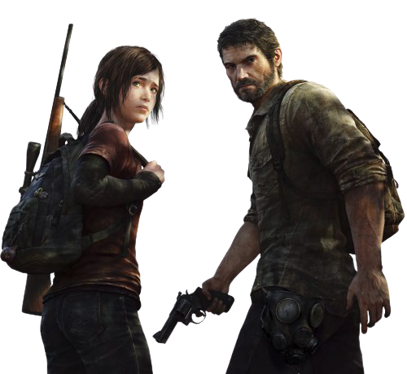
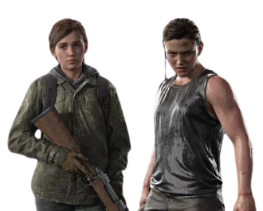

Game of Thrones stars Pedro Pascal and Bella Ramsey have been cast in the HBO adaption of hit video game The Last Of Us.
They're set to play main characters Joel and Ellie - who are tasked with escaping a pandemic in post-apocalyptic America.
Pascal is also currently starring in Star War series The Mandalorian and was in DC Comics film Wonder Woman 1984.The Sony PlayStation franchise is being adapted by Chernobyl's Craig Mazin alongside the game's creator Neil Druckmann. The game is set 20 years after the destruction of society and most of the population has been infected by a mind-controlling fungus that turns its hosts hostile and cannibalistic.Its highly acclaimed sequel was also released last year, winning six awards at the Golden Joysticks, including best storytelling and game of the year - so there will be plenty of material to explore in the TV series.Craig describes The Last of Us as a "breathtaking work of art"
and told The Hollywood Reporter adapting it for TV has been a dream of his for years.
 
In addition to the above check out this post, the buzz around this is quite overwhelming hope HBO can deliver.
On personal thought many of the adaption of games in to movies have ended in utter failure, but this one will not be one of them
because the game has a rich history from which a beautiful series can be produced.